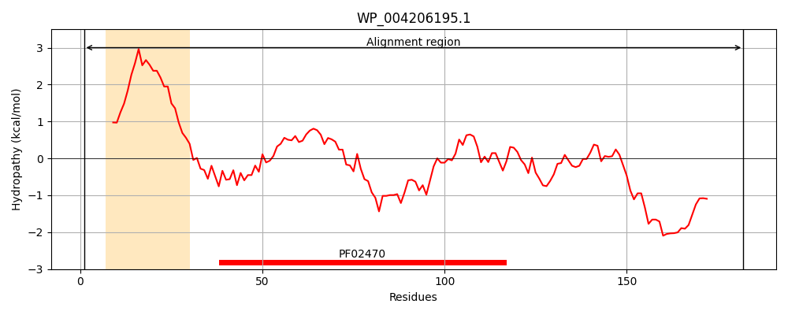
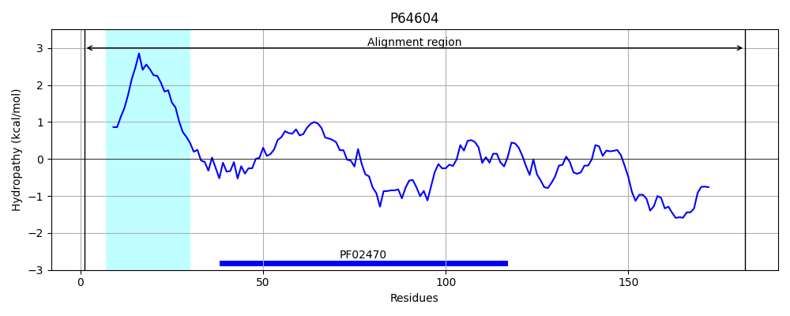
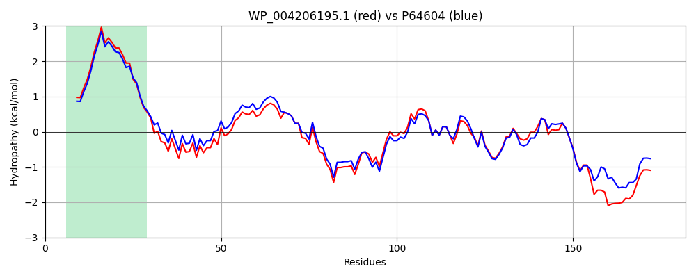

Hit Accession: P64604
Hit TCID: 3.A.1.27.3
Hit Description: gnl|BL_ORD_ID|11212 gnl|TC-DB|P64604|3.A.1.27.3 Probable phospholipid ABC transporter-binding protein mlaD OS=Escherichia coli (strain K12) GN=mlaD PE=1 SV=1
Mach Len: 182
e:0.000000
Query TMS Count : 1
Hit TMS Count: 1
TMS-Overlap Score: 1.200000
Predicted Substrates:CHEBI:8150;phospholipid
BLAST Alignment:
Score: 789 , Bit scores: 308 bits, E-value: 6.3e-109, Alignment length: 182, Percentage identity: 85
Query: 1 MQTKKNEIWVGVFLLVALLAALFVCLKAANVTSLRTEPTYRLYATFDNIGGLKARSPVRIGGVVVGRVADITLDPKTYLPRVELDIDERYNHIPDTSSLAIRTSGLLGEQYLALNVGFEDPDLGTTILKDGGTIQDTKSAMVLEDLIGQFLYNSKGGDNQNSGNDKAEAEGHTDATPAAGTT 182
MQTKKNEIWVG+FLL ALLAALFVCLKAANVTS+RTEPTY LYATFDNIGGLKARSPV IGGVVVGRVADITLDPKTYLPRV L+I++RYNHIPDTSSL+IRTSGLLGEQYLALNVGFEDP+LGT ILKDG TIQDTKSAMVLEDLIGQFLY SKG DN+NSG+ A A G+ + T GTT
Sbjct: 1 MQTKKNEIWVGIFLLAALLAALFVCLKAANVTSIRTEPTYTLYATFDNIGGLKARSPVSIGGVVVGRVADITLDPKTYLPRVTLEIEQRYNHIPDTSSLSIRTSGLLGEQYLALNVGFEDPELGTAILKDGDTIQDTKSAMVLEDLIGQFLYGSKGDDNKNSGDAPAAAPGNNETTEPVGTT 182 | Protein Hydropathy Plots: |
|---|
|  |  |
Pairwise Alignment-Hydropathy Plot:
|
|---|
|  |